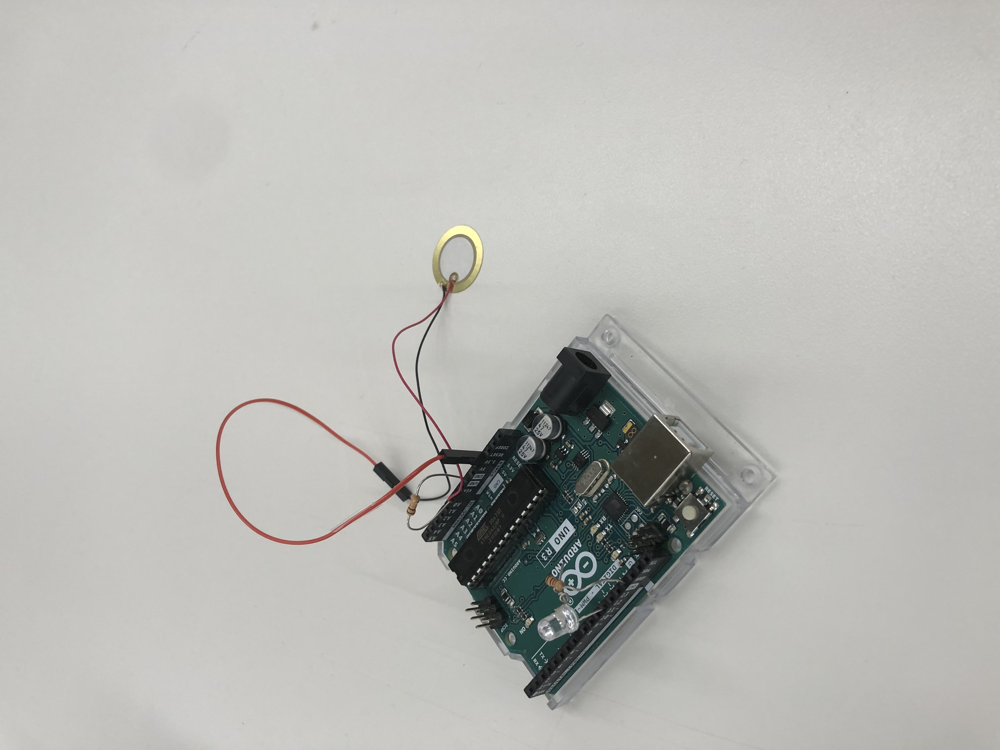
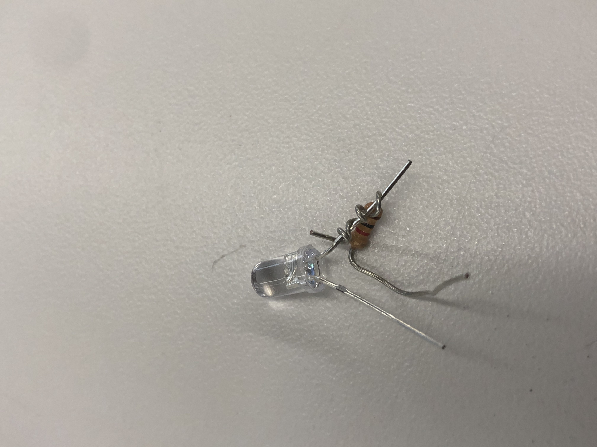
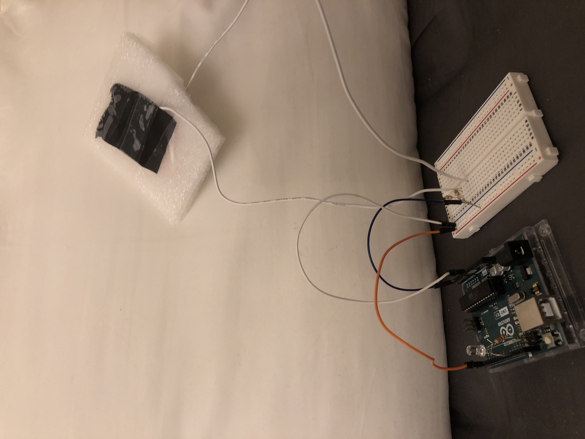
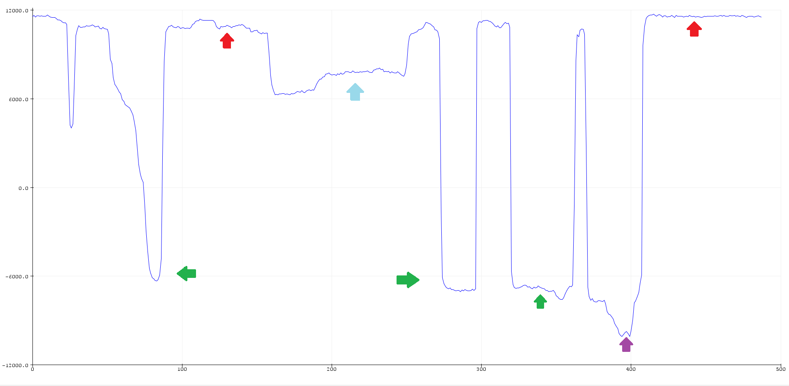

Week 5: Electronic Input Devices
Week 5 was definitely a challenge, in this week we learned about capacitance and how we can utilize it in our own projects
First things first though, we had to simply just create an electronic input device: something that takes in an input into our arduino code
This sensor above is a Piezoelectric, a device which detects vibration, sound, and force
While I was wondering how I could use this Piezo I decided on using this as an opportunity to learn a language ive always wanted to learn, Morse Code
First I had to get an LED light to show the morse code I would be writing
I told one of my classmates my plan to make this and they suggested that I dont even use a breadboard, and that it was possible to complete the wiring only on the arduino
I thought it was a fun challenge, and would make the wiring less confusing, so I took his advice and brute forced my way through it
As you can see above I literally just wrapped the resistor around the led which surprisingly worked
const int piezo = 0;
const int LED = 11;
void setup() {
pinMode(LED, OUTPUT);
Serial.begin(9600);
}
void loop() {
if (analogRead(piezo) >= 20) { // Determines the sensitivity of the sensor
//long
Serial.println(analogRead(piezo));
digitalWrite(LED, HIGH);
delay(1250);
digitalWrite(LED, LOW);
} else if (analogRead(piezo) >=6) { // <--- Determines sensitivity
//short
Serial.println(analogRead(piezo));
digitalWrite(LED, HIGH);
delay(500);
digitalWrite(LED, LOW);
}
else {
digitalWrite(LED, LOW);
}
}
How the code works is thats divided into the long and short blinks with the sensitivity of the Piezo being different for both
I would later simplify it when I made my own input sensor
Above is a video me trying to write out "Hello" correcting myself at every error and trying to get the long blink by slamming my hand against the sensor
The issue with the Piezo sensor is that its not super accurate, depending on where you hit the sensor, to the left, on the edge, or where the wires are, you can get completely different inputs even though the force was the same
Luckily, I ended up upgrading when I made my own sensor
The sensor isnt much to be honest, underneath the Velostat (black material) there's copper facing eachother on both ends which I taped up to hold
However, this DIY sensor didnt work with my old code, because it would read the smallest input extremely quickly and only make short blinks
long result; //variable for the result of the tx_rx measurement.
int analog_pin = A4;
int tx_pin = 4;
const int LED = 11;
void setup() {
pinMode(LED, OUTPUT);
pinMode(tx_pin, OUTPUT);
Serial.begin(9600);
}
void loop() {
result = tx_rx();
Serial.println(result);
if (tx_rx() < 8000) {
digitalWrite(LED, HIGH);
} else {
digitalWrite(LED, LOW);
}
}
long tx_rx(){
int read_high;
int read_low;
int diff;
long int sum;
int N_samples = 100;
sum = 0;
for (int i = 0; i < N_samples; i++){
digitalWrite(tx_pin,HIGH);
read_high = analogRead(analog_pin);
delayMicroseconds(100);
digitalWrite(tx_pin,LOW);
read_low = analogRead(analog_pin);
diff = read_high - read_low;
sum += diff;
}
return sum;
}
This code made it a lot easier to write in morse code as I only had one setting. However, this does mean that the user has to manually
Overall, I think that this was a welcome improvement, which I ended up collecting some data on too!
Shows the average without any pressure
Shows apex of pressure with one hand
Shows minimum pressure that needs to be applied (8000)
Shows apex of pressure with two hands